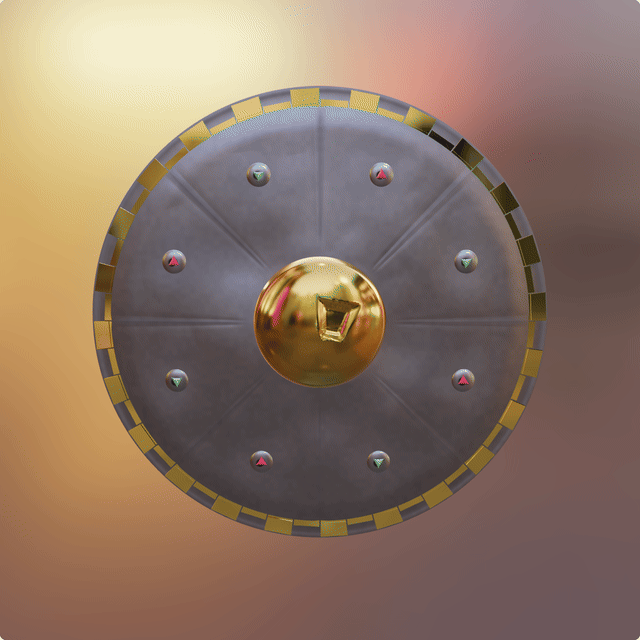

Vertiefung: Materialalterung
Warum Materialalterung eine PBR-Frage ist
Auf den vorherigen Seiten wurden PBR-Materialien vor allem als Kombination aus Parametern beschrieben: Base Color, Metallic, Roughness und die Beleuchtung durch IBL. In einer echten Szene sind diese Werte jedoch selten konstant. Ein Objekt altert, wird benutzt, oxidiert, verschmutzt oder wird an Kanten wieder blank poliert.
Damit ist Alterung kein reiner “Farbfilter”. Wenn Metall oxidiert oder Leder verschmutzt, ändert sich nicht nur die sichtbare Farbe der Oberfläche. Auch das Reflexionsverhalten wird anders ausgewertet:
- Blankes Metall bleibt metallisch und reflektiert die Umgebung stark.
- Dunkle Oxidation erhöht die Rauheit und verbreitert die spekulare Reflexion.
- Rost und Schmutz sind nichtmetallisch und wirken deutlich matter.
- Stahl, polierte Metallteile und Leder besitzen unterschiedliche Erwartungen an Metallic-, Roughness- und Base-Color-Werte.
Die zentrale Idee dieser Vertiefung lautet deshalb:
Realistische Alterung entsteht, wenn mehrere PBR-Maps gemeinsam verändert werden.
Interaktive Demo: Ein Buckler altert
Die folgende Demo verwendet ein rundes Buckler-Schild. Es besitzt eine gewölbte Stahlfläche mit gravierten Radialrillen, eine vergoldete Randeinlage mit durchgehendem Ring und abwechselnden Zähnen, Dellen, einen zentralen Messingbuckel, flache Stahlziernieten mit großen Trillianten sowie eine matte Lederhalterung auf der Rückseite. Damit kommen an einem erkennbaren Objekt mehrere PBR-Materialkategorien zusammen: blankes Metall, rauere oxidierte Metallbereiche, facettierte Edelsteine und ein nichtmetallischer Dielektrikum-Anteil.
Der Alterungsslider verändert gemeinsam mehrere Maps:

- Base Color / Albedo: Stahl dunkelt nach, Rost sammelt sich in Rillen, Nieten, Kanten und Dellen. Die Gold-Randeinlage bekommt fleckige Anlaufstellen, dunkle Risse und glänzende Inseln – kein homogenes Vergilben.
- Roughness: Gealterte Bereiche werden matter; der Specular-Lobe der Cook-Torrance-BRDF wird dadurch breiter.
- Metallic: Rost und Leder verhalten sich nichtmetallisch, blanke Stahlbereiche bleiben metallisch.
- Normal: Rost, Mikrostruktur und feine Oberflächenunruhe verändern die Oberflächennormale.
- AO/Cavity: Fugen, Dellen, Nietränder und Radialrillen werden lokal abgedunkelt.
Normal- und Cavity-Maps sind dabei keine zusätzlichen Materialparameter der Cook-Torrance-Gleichung. Sie gehören zum praktischen PBR-Workflow: Die Normal Map ergänzt Mikrostruktur, während AO/Cavity lokale Abschattung in engen Vertiefungen annähert. In Babylon wird diese Occlusion-Information beim PBRMaterial als ambientTexture eingebunden; die Base Color bleibt dabei ein eigener Kanal. Durch die Schalter kann beobachtet werden, welche Information durch welche Map in die Darstellung eingebracht wird.
Interpretation der drei Alterungszustände
Bei 0 % Alterung dominiert blankes Metall auf der Schildfläche. Acht gravierte Radialrillen und eine vergoldete Randeinlage betonen den dekorativen Charakter. Außenkante und Nieten bestehen aus Stahl, der zentrale Buckel aus Messing (Kupfer-Zink-Legierung). In jeder Niete sitzt ein großer dreieckiger Trilliant: Smaragde und Rubine wechseln sich ab, ihre Spitzen zeigen gegenläufig nach unten bzw. oben. Der Messingbuckel reflektiert am klarsten, die Edelsteine wirken glasig und gesättigt farbig. Das Leder auf der Rückseite ist dagegen nichtmetallisch und rau.
Beim Preset Gealtert entstehen dunklere Oxidationsbereiche, ohne dass die Oberfläche schon deutlich rostbraun wird. Angelaufene Stellen sammeln sich zuerst in den Gravurrillen, an Nieträndern, in Dellen und an Geometrieübergängen. Am Messingbuckel bildet sich türkisfarbene Patina statt Rost; die Gold-Randeinlage zeigt fleckige, überzeichnete Anlaufeffekte wie verwittertes Blattgold.
Bei 100 % Alterung ist die Metallfläche deutlich heterogener. Rostbraune Bereiche sammeln sich vor allem in den Gravurrillen, an Kanten, Dellen und Nieten, während die Fläche insgesamt etwas weniger homogen „überrostet“ wirkt. Die Messingbuckel und Randeinlage altern dabei sichtbar anders als der Stahlkörper: Der Buckel patiniert grünlich, die Gold-Einlage behält metallische Inseln, während Ocker-, Braun- und Rußflecken lokal die Reflexionen brechen. Gerade der Vergleich zwischen mattem Rost, blankem Metall und rauem Leder zeigt, warum PBR nicht nur über Farbe erklärt werden kann.
Was an der Demo vereinfacht ist
Die Demo ist kein chemisch exaktes Korrosionsmodell. Sie simuliert nicht, wie schnell Stahl unter bestimmten Umweltbedingungen oxidiert. Für die PBR-Erklärung ist die chemische Genauigkeit aber nicht der entscheidende Punkt.
Warum Buckel und Randeinlage unterschiedlich altern: Beide starten blank und poliert, oxidieren aber nicht gleich. Der Buckel ist massives Messing mit hohem Kupferanteil – feuchte Luft und Fingerkontakt begünstigen Verdigris (türkisfarbene Carbonat-/Sulfatpatina auf Kupferlegierungen). Die Randeinlage ist als Blattgold aufgebracht: Gold selbst oxidiert kaum, aber Schmutz, Schwefelverbindungen aus der Luft und durchscheinende Kupfer-/Silberanteile in der Vergoldung erzeugen ocker- und braunfleckige Anläufe statt Grün. Zusätzlich sammelt sich in den Zahnzwischenräumen mehr Schmutz als auf der gewölbten Buckeloberfläche. Das ist vereinfacht, aber materialplausibel – kein Widerspruch, sondern unterschiedliche Werkstoffe und Mikroexposition.
Die 2D-Map-Vorschau unten kann per Dropdown zwischen den wichtigsten Materialien umgeschaltet werden (Schildfläche, Buckel, Goldrand, Niete, Leder). Im 3D-Modell tragen alle Teile eigene prozedurale Maps.
Wichtig ist die Kopplung der Materialinformationen:
- In der Albedo-Map entstehen dunkle und rostbraune Bereiche.
- In der Roughness-Map werden diese Bereiche matter.
- In der Metallic-Map verlieren oxidierte Bereiche ihre metallische Reflexion.
- In der Normal Map entstehen Körnung, kleine Erhöhungen und feine Oberflächenunruhe.
- In der AO/Cavity-Map werden Dellen, Nietränder und Fugen lokal abgedunkelt.
Damit wird aus einem globalen Materialwert ein ortsabhängiger Materialzustand. Das entspricht dem praktischen PBR-Workflow, in dem Texture Maps nicht nur Oberflächen bemalen, sondern das Verhalten der Oberfläche unter Beleuchtung steuern.
Ausblick: Vom Slider zum vollständigen Material-Workflow
Die Vertiefung zeigt eine maskengesteuerte PBR-Alterung an einem eigenen Schildmodell. In einem vollständigen Produktionsworkflow könnten die verwendeten Masken zusätzlich aus Blender, Substance Painter oder gebackenen Curvature-/Ambient-Occlusion-Maps stammen. Dann würden Rost, polierte Kanten und Schmutzansammlungen noch stärker an die tatsächliche Geometrie gebunden.
Der Kern bleibt aber gleich: Alterung ist in PBR keine einzelne Zahl, sondern eine gemeinsame Veränderung mehrerer Maps.